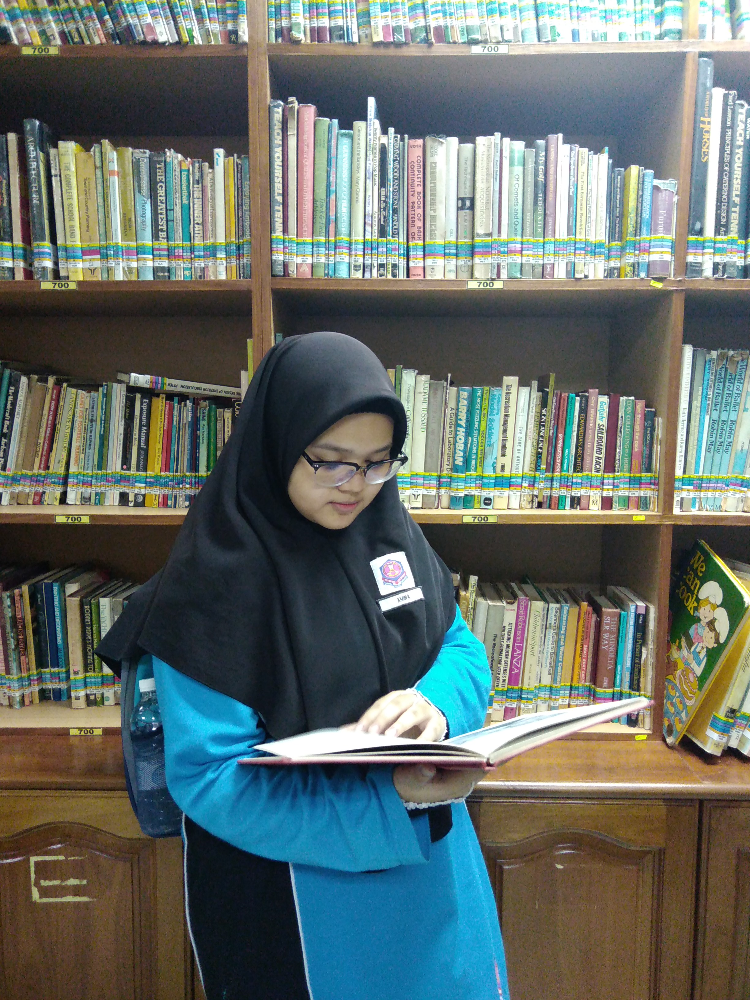
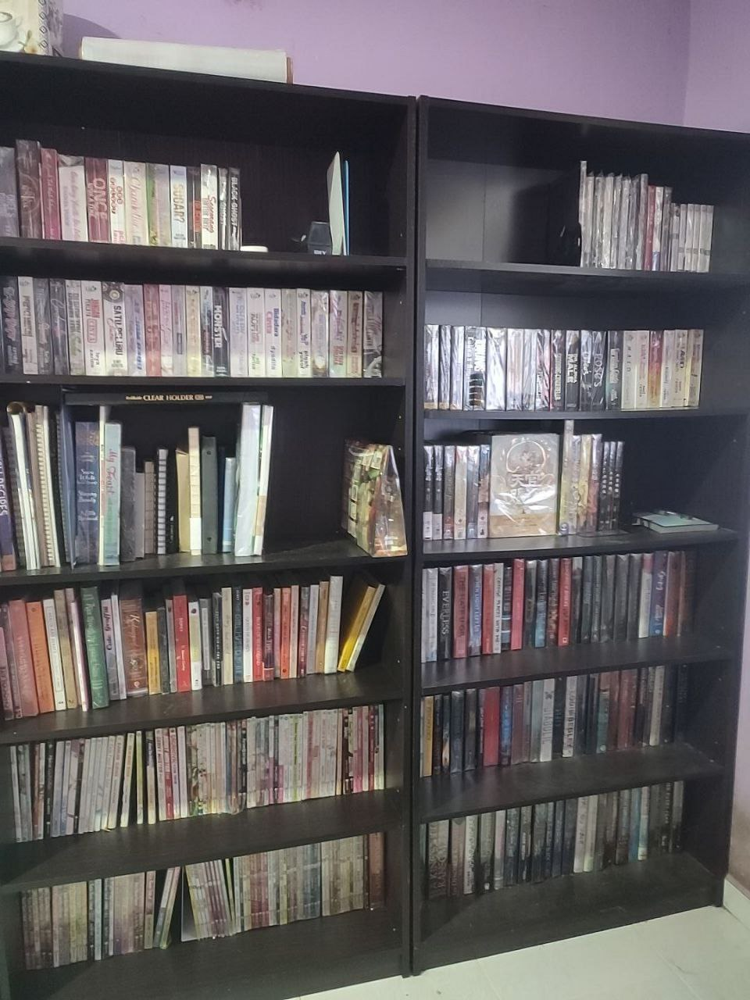

As you can see here. I'm enjoying my time with books. It started when I was young where my sister gave me a local comic book. Since then I grew up with reading any books for example like a novel. It took me quite lot of time for me until I discovered my own preference. I have many kind of genre such as romance, thriller, mystery or even advanture. It is always good to explore in reading since it will give you a new kind of experience that only reading capable of.
I also do a book hunting. Book used to be cheap but as I grew up. It is getting pricier over time. As a student I find it quite hard to enjoy my hobby freely but in order to satisfy myself, I save up my own money. Meanwhile the shelves filled with the book are one of my own collection. It is not only own by me but also my sister since we share the same hobby. I have another shelf but it is in another room. I can't deny that I don't really have much other hobbies that I can stick quite long compared to reading. It is more peaceful spending your time reading.It won't drain your energy as much as moving around to do other hobbies